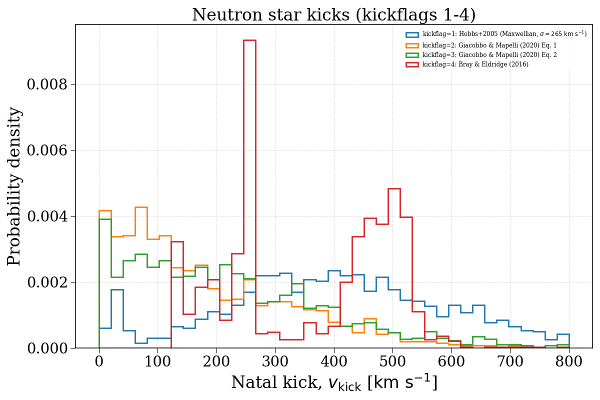
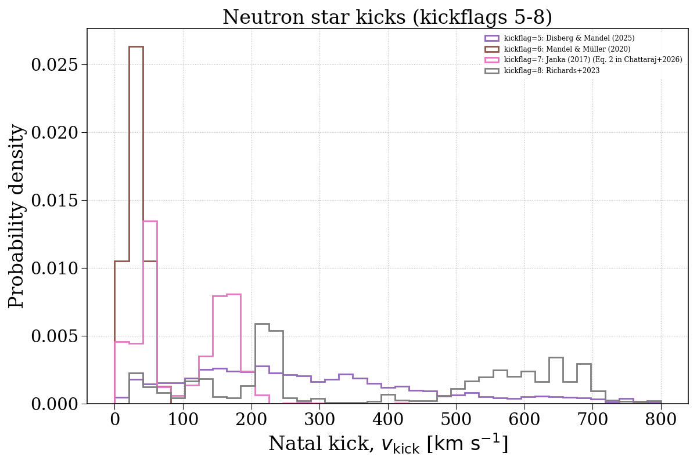
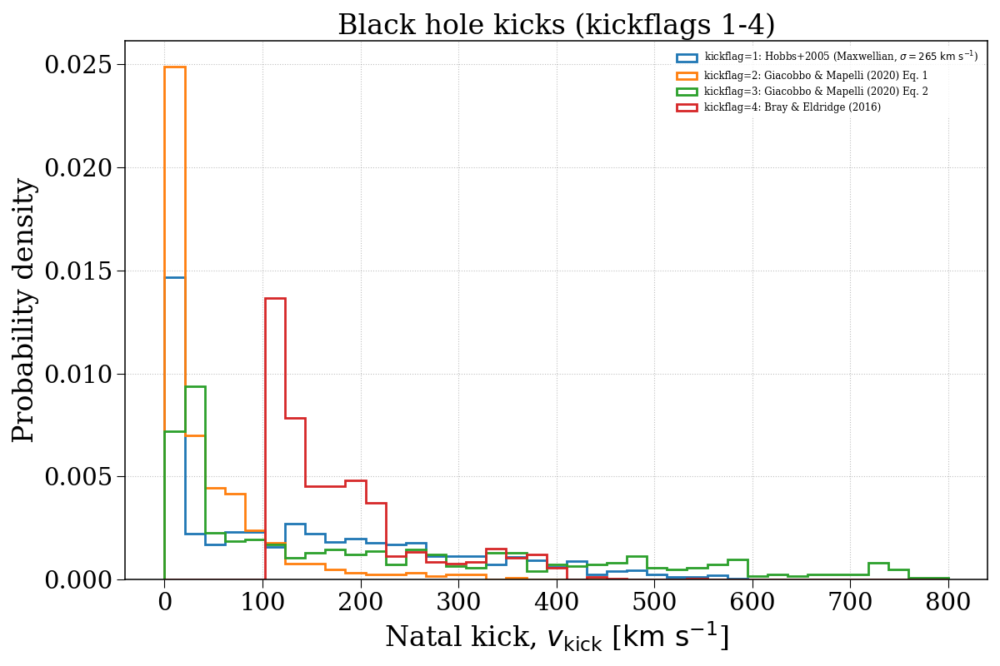
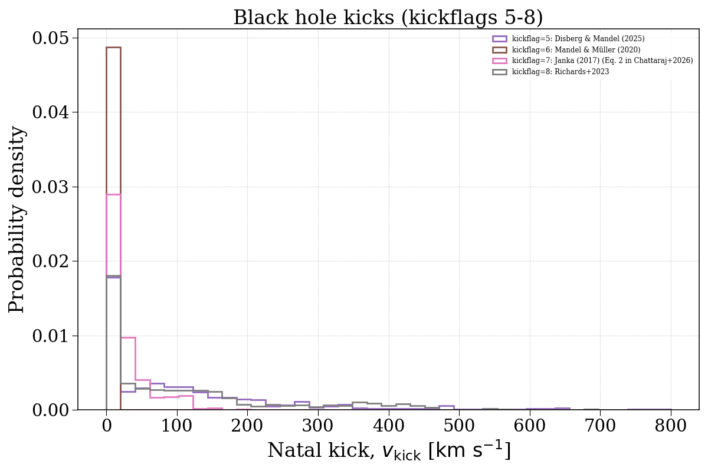

Note
Go to the end to download the full example code.
kickflag¶
This example demonstrates how changing the kickflag parameter can affect the natal kick velocity distributions of compact objects. We separate this into neutron stars and black holes.




Evolving population with kickflag = 1...
Evolving: 0%| | 0/2013 [00:00<?, ?sys/s]
Evolving: 1%| | 21/2013 [00:00<00:09, 203.89sys/s]
Evolving: 2%|▏ | 42/2013 [00:00<00:15, 126.19sys/s]
Evolving: 3%|▎ | 66/2013 [00:00<00:12, 151.96sys/s]
Evolving: 4%|▍ | 83/2013 [00:00<00:14, 135.23sys/s]
Evolving: 5%|▍ | 98/2013 [00:00<00:15, 121.14sys/s]
Evolving: 6%|▌ | 118/2013 [00:00<00:14, 130.47sys/s]
Evolving: 7%|▋ | 139/2013 [00:00<00:12, 147.24sys/s]
Evolving: 8%|▊ | 155/2013 [00:01<00:12, 148.18sys/s]
Evolving: 8%|▊ | 171/2013 [00:01<00:13, 136.97sys/s]
Evolving: 9%|▉ | 186/2013 [00:01<00:14, 122.12sys/s]
Evolving: 10%|▉ | 199/2013 [00:01<00:14, 123.13sys/s]
Evolving: 11%|█ | 218/2013 [00:01<00:16, 109.45sys/s]
Evolving: 12%|█▏ | 246/2013 [00:01<00:12, 145.35sys/s]
Evolving: 13%|█▎ | 263/2013 [00:01<00:13, 128.82sys/s]
Evolving: 14%|█▍ | 281/2013 [00:02<00:13, 133.14sys/s]
Evolving: 15%|█▍ | 296/2013 [00:02<00:14, 115.95sys/s]
Evolving: 16%|█▌ | 319/2013 [00:02<00:12, 139.22sys/s]
Evolving: 17%|█▋ | 335/2013 [00:02<00:16, 102.98sys/s]
Evolving: 18%|█▊ | 362/2013 [00:02<00:12, 130.36sys/s]
Evolving: 19%|█▉ | 378/2013 [00:02<00:12, 128.48sys/s]
Evolving: 20%|█▉ | 397/2013 [00:03<00:14, 111.86sys/s]
Evolving: 21%|██ | 425/2013 [00:03<00:11, 141.73sys/s]
Evolving: 22%|██▏ | 442/2013 [00:03<00:10, 147.55sys/s]
Evolving: 23%|██▎ | 459/2013 [00:03<00:10, 141.49sys/s]
Evolving: 24%|██▎ | 475/2013 [00:03<00:12, 127.13sys/s]
Evolving: 24%|██▍ | 493/2013 [00:03<00:11, 137.96sys/s]
Evolving: 25%|██▌ | 509/2013 [00:03<00:13, 111.24sys/s]
Evolving: 26%|██▌ | 527/2013 [00:04<00:12, 115.79sys/s]
Evolving: 27%|██▋ | 547/2013 [00:04<00:11, 128.05sys/s]
Evolving: 28%|██▊ | 566/2013 [00:04<00:10, 141.96sys/s]
Evolving: 29%|██▉ | 582/2013 [00:04<00:12, 116.06sys/s]
Evolving: 30%|███ | 606/2013 [00:04<00:09, 142.74sys/s]
Evolving: 31%|███ | 623/2013 [00:04<00:09, 144.49sys/s]
Evolving: 32%|███▏ | 639/2013 [00:04<00:09, 147.96sys/s]
Evolving: 33%|███▎ | 655/2013 [00:04<00:09, 149.93sys/s]
Evolving: 33%|███▎ | 672/2013 [00:05<00:08, 151.26sys/s]
Evolving: 34%|███▍ | 688/2013 [00:05<00:08, 147.30sys/s]
Evolving: 35%|███▍ | 704/2013 [00:05<00:08, 148.65sys/s]
Evolving: 36%|███▌ | 720/2013 [00:05<00:08, 150.54sys/s]
Evolving: 37%|███▋ | 736/2013 [00:05<00:10, 125.88sys/s]
Evolving: 38%|███▊ | 759/2013 [00:05<00:08, 147.38sys/s]
Evolving: 38%|███▊ | 775/2013 [00:05<00:09, 136.92sys/s]
Evolving: 39%|███▉ | 790/2013 [00:05<00:10, 120.34sys/s]
Evolving: 40%|████ | 808/2013 [00:06<00:10, 116.33sys/s]
Evolving: 42%|████▏ | 837/2013 [00:06<00:07, 153.18sys/s]
Evolving: 42%|████▏ | 854/2013 [00:06<00:10, 114.21sys/s]
Evolving: 44%|████▍ | 884/2013 [00:06<00:07, 150.07sys/s]
Evolving: 45%|████▍ | 903/2013 [00:06<00:07, 149.69sys/s]
Evolving: 46%|████▌ | 921/2013 [00:06<00:07, 149.77sys/s]
Evolving: 47%|████▋ | 938/2013 [00:07<00:08, 131.42sys/s]
Evolving: 47%|████▋ | 953/2013 [00:07<00:07, 134.38sys/s]
Evolving: 48%|████▊ | 968/2013 [00:07<00:09, 111.75sys/s]
Evolving: 49%|████▉ | 984/2013 [00:07<00:09, 112.12sys/s]
Evolving: 50%|████▉ | 1001/2013 [00:07<00:08, 120.22sys/s]
Evolving: 51%|█████ | 1022/2013 [00:07<00:07, 140.66sys/s]
Evolving: 52%|█████▏ | 1038/2013 [00:07<00:07, 130.79sys/s]
Evolving: 52%|█████▏ | 1056/2013 [00:08<00:08, 112.01sys/s]
Evolving: 54%|█████▍ | 1083/2013 [00:08<00:06, 144.88sys/s]
Evolving: 55%|█████▍ | 1100/2013 [00:08<00:06, 140.58sys/s]
Evolving: 55%|█████▌ | 1116/2013 [00:08<00:07, 120.14sys/s]
Evolving: 56%|█████▋ | 1137/2013 [00:08<00:06, 138.85sys/s]
Evolving: 57%|█████▋ | 1153/2013 [00:08<00:07, 114.36sys/s]
Evolving: 58%|█████▊ | 1169/2013 [00:08<00:07, 119.98sys/s]
Evolving: 59%|█████▉ | 1183/2013 [00:09<00:08, 96.86sys/s]
Evolving: 59%|█████▉ | 1195/2013 [00:09<00:08, 99.51sys/s]
Evolving: 60%|██████ | 1215/2013 [00:09<00:08, 97.92sys/s]
Evolving: 62%|██████▏ | 1238/2013 [00:09<00:06, 119.02sys/s]
Evolving: 62%|██████▏ | 1252/2013 [00:09<00:06, 111.54sys/s]
Evolving: 63%|██████▎ | 1275/2013 [00:09<00:06, 111.58sys/s]
Evolving: 64%|██████▍ | 1287/2013 [00:10<00:07, 97.18sys/s]
Evolving: 65%|██████▍ | 1305/2013 [00:10<00:07, 97.54sys/s]
Evolving: 65%|██████▌ | 1316/2013 [00:10<00:07, 89.81sys/s]
Evolving: 66%|██████▋ | 1336/2013 [00:10<00:06, 106.38sys/s]
Evolving: 67%|██████▋ | 1352/2013 [00:10<00:06, 96.22sys/s]
Evolving: 68%|██████▊ | 1376/2013 [00:10<00:05, 119.24sys/s]
Evolving: 69%|██████▉ | 1392/2013 [00:11<00:05, 116.49sys/s]
Evolving: 70%|██████▉ | 1406/2013 [00:11<00:05, 116.01sys/s]
Evolving: 71%|███████ | 1422/2013 [00:11<00:04, 125.84sys/s]
Evolving: 71%|███████▏ | 1436/2013 [00:11<00:04, 123.26sys/s]
Evolving: 72%|███████▏ | 1449/2013 [00:11<00:05, 105.38sys/s]
Evolving: 73%|███████▎ | 1463/2013 [00:11<00:04, 111.60sys/s]
Evolving: 73%|███████▎ | 1475/2013 [00:11<00:04, 111.21sys/s]
Evolving: 74%|███████▍ | 1489/2013 [00:11<00:04, 114.76sys/s]
Evolving: 75%|███████▍ | 1501/2013 [00:12<00:04, 112.88sys/s]
Evolving: 76%|███████▌ | 1520/2013 [00:12<00:03, 129.96sys/s]
Evolving: 76%|███████▌ | 1534/2013 [00:12<00:05, 88.44sys/s]
Evolving: 77%|███████▋ | 1554/2013 [00:12<00:04, 97.51sys/s]
Evolving: 79%|███████▉ | 1586/2013 [00:12<00:04, 102.38sys/s]
Evolving: 81%|████████ | 1627/2013 [00:12<00:02, 150.83sys/s]
Evolving: 82%|████████▏ | 1646/2013 [00:13<00:03, 122.08sys/s]
Evolving: 83%|████████▎ | 1674/2013 [00:13<00:02, 148.47sys/s]
Evolving: 84%|████████▍ | 1693/2013 [00:13<00:02, 129.69sys/s]
Evolving: 85%|████████▍ | 1709/2013 [00:13<00:02, 110.72sys/s]
Evolving: 86%|████████▌ | 1734/2013 [00:13<00:02, 134.76sys/s]
Evolving: 87%|████████▋ | 1751/2013 [00:14<00:02, 122.92sys/s]
Evolving: 88%|████████▊ | 1768/2013 [00:14<00:02, 114.57sys/s]
Evolving: 89%|████████▉ | 1791/2013 [00:14<00:01, 136.55sys/s]
Evolving: 90%|████████▉ | 1807/2013 [00:14<00:01, 125.72sys/s]
Evolving: 91%|█████████ | 1824/2013 [00:14<00:01, 133.08sys/s]
Evolving: 91%|█████████▏| 1839/2013 [00:14<00:01, 136.73sys/s]
Evolving: 92%|█████████▏| 1854/2013 [00:14<00:01, 106.77sys/s]
Evolving: 93%|█████████▎| 1873/2013 [00:15<00:01, 104.52sys/s]
Evolving: 95%|█████████▍| 1907/2013 [00:15<00:00, 149.91sys/s]
Evolving: 96%|█████████▌| 1925/2013 [00:15<00:00, 141.78sys/s]
Evolving: 96%|█████████▋| 1941/2013 [00:15<00:00, 143.91sys/s]
Evolving: 97%|█████████▋| 1957/2013 [00:15<00:00, 142.97sys/s]
Evolving: 98%|█████████▊| 1973/2013 [00:15<00:00, 145.19sys/s]
Evolving: 99%|█████████▉| 1989/2013 [00:15<00:00, 148.99sys/s]
Evolving: 100%|█████████▉| 2005/2013 [00:15<00:00, 137.96sys/s]
Evolving: 100%|██████████| 2013/2013 [00:16<00:00, 125.73sys/s]
[Time taken: 16.2620 seconds]
Evolving population with kickflag = 2...
Evolving: 0%| | 0/2013 [00:00<?, ?sys/s]
Evolving: 0%| | 8/2013 [00:00<00:34, 58.62sys/s]
Evolving: 1%| | 24/2013 [00:00<00:29, 67.39sys/s]
Evolving: 3%|▎ | 61/2013 [00:00<00:12, 152.80sys/s]
Evolving: 4%|▍ | 80/2013 [00:00<00:14, 129.31sys/s]
Evolving: 5%|▍ | 95/2013 [00:00<00:16, 117.94sys/s]
Evolving: 6%|▌ | 116/2013 [00:00<00:13, 139.81sys/s]
Evolving: 7%|▋ | 135/2013 [00:01<00:12, 149.29sys/s]
Evolving: 8%|▊ | 152/2013 [00:01<00:12, 151.54sys/s]
Evolving: 8%|▊ | 169/2013 [00:01<00:13, 136.69sys/s]
Evolving: 9%|▉ | 184/2013 [00:01<00:15, 119.38sys/s]
Evolving: 10%|▉ | 199/2013 [00:01<00:14, 123.84sys/s]
Evolving: 11%|█ | 218/2013 [00:01<00:15, 116.18sys/s]
Evolving: 12%|█▏ | 237/2013 [00:01<00:13, 128.28sys/s]
Evolving: 12%|█▏ | 251/2013 [00:01<00:13, 127.67sys/s]
Evolving: 13%|█▎ | 271/2013 [00:02<00:12, 142.46sys/s]
Evolving: 14%|█▍ | 286/2013 [00:02<00:15, 111.66sys/s]
Evolving: 15%|█▌ | 312/2013 [00:02<00:11, 144.46sys/s]
Evolving: 16%|█▋ | 329/2013 [00:02<00:11, 143.36sys/s]
Evolving: 17%|█▋ | 345/2013 [00:02<00:14, 118.78sys/s]
Evolving: 18%|█▊ | 362/2013 [00:02<00:12, 128.84sys/s]
Evolving: 19%|█▊ | 377/2013 [00:02<00:13, 121.81sys/s]
Evolving: 20%|█▉ | 397/2013 [00:03<00:14, 109.70sys/s]
Evolving: 21%|██ | 425/2013 [00:03<00:11, 144.07sys/s]
Evolving: 22%|██▏ | 442/2013 [00:03<00:11, 141.23sys/s]
Evolving: 23%|██▎ | 458/2013 [00:03<00:10, 142.62sys/s]
Evolving: 24%|██▎ | 474/2013 [00:03<00:12, 127.70sys/s]
Evolving: 24%|██▍ | 491/2013 [00:03<00:11, 136.37sys/s]
Evolving: 25%|██▌ | 508/2013 [00:03<00:10, 144.05sys/s]
Evolving: 26%|██▌ | 524/2013 [00:04<00:12, 121.34sys/s]
Evolving: 27%|██▋ | 538/2013 [00:04<00:12, 120.67sys/s]
Evolving: 27%|██▋ | 551/2013 [00:04<00:11, 122.47sys/s]
Evolving: 28%|██▊ | 570/2013 [00:04<00:10, 138.77sys/s]
Evolving: 29%|██▉ | 585/2013 [00:04<00:12, 118.58sys/s]
Evolving: 30%|██▉ | 600/2013 [00:04<00:11, 125.03sys/s]
Evolving: 31%|███ | 620/2013 [00:04<00:10, 138.85sys/s]
Evolving: 32%|███▏ | 638/2013 [00:04<00:09, 144.29sys/s]
Evolving: 32%|███▏ | 654/2013 [00:05<00:09, 144.62sys/s]
Evolving: 33%|███▎ | 672/2013 [00:05<00:08, 149.70sys/s]
Evolving: 34%|███▍ | 688/2013 [00:05<00:09, 143.70sys/s]
Evolving: 35%|███▍ | 704/2013 [00:05<00:08, 147.49sys/s]
Evolving: 36%|███▌ | 720/2013 [00:05<00:08, 148.64sys/s]
Evolving: 37%|███▋ | 735/2013 [00:05<00:09, 130.29sys/s]
Evolving: 38%|███▊ | 756/2013 [00:05<00:08, 147.36sys/s]
Evolving: 38%|███▊ | 772/2013 [00:05<00:08, 141.12sys/s]
Evolving: 39%|███▉ | 787/2013 [00:06<00:10, 114.88sys/s]
Evolving: 40%|████ | 808/2013 [00:06<00:10, 115.05sys/s]
Evolving: 42%|████▏ | 837/2013 [00:06<00:07, 150.06sys/s]
Evolving: 42%|████▏ | 854/2013 [00:06<00:10, 114.04sys/s]
Evolving: 44%|████▍ | 884/2013 [00:06<00:07, 145.50sys/s]
Evolving: 45%|████▍ | 903/2013 [00:06<00:07, 154.72sys/s]
Evolving: 46%|████▌ | 921/2013 [00:06<00:07, 154.83sys/s]
Evolving: 47%|████▋ | 938/2013 [00:07<00:07, 136.01sys/s]
Evolving: 47%|████▋ | 953/2013 [00:07<00:07, 135.19sys/s]
Evolving: 48%|████▊ | 968/2013 [00:07<00:09, 114.84sys/s]
Evolving: 49%|████▉ | 984/2013 [00:07<00:09, 108.62sys/s]
Evolving: 50%|████▉ | 1001/2013 [00:07<00:08, 121.26sys/s]
Evolving: 51%|█████ | 1019/2013 [00:07<00:07, 133.51sys/s]
Evolving: 52%|█████▏ | 1037/2013 [00:07<00:06, 144.02sys/s]
Evolving: 52%|█████▏ | 1054/2013 [00:07<00:06, 145.71sys/s]
Evolving: 53%|█████▎ | 1070/2013 [00:08<00:08, 111.96sys/s]
Evolving: 54%|█████▍ | 1096/2013 [00:08<00:06, 144.32sys/s]
Evolving: 55%|█████▌ | 1113/2013 [00:08<00:07, 115.36sys/s]
Evolving: 56%|█████▋ | 1137/2013 [00:08<00:06, 139.41sys/s]
Evolving: 57%|█████▋ | 1154/2013 [00:08<00:07, 112.94sys/s]
Evolving: 58%|█████▊ | 1173/2013 [00:08<00:06, 127.61sys/s]
Evolving: 59%|█████▉ | 1189/2013 [00:09<00:07, 109.79sys/s]
Evolving: 60%|█████▉ | 1202/2013 [00:09<00:08, 99.61sys/s]
Evolving: 60%|██████ | 1215/2013 [00:09<00:08, 91.95sys/s]
Evolving: 62%|██████▏ | 1238/2013 [00:09<00:06, 112.54sys/s]
Evolving: 62%|██████▏ | 1251/2013 [00:09<00:07, 102.88sys/s]
Evolving: 63%|██████▎ | 1275/2013 [00:10<00:06, 109.07sys/s]
Evolving: 64%|██████▍ | 1287/2013 [00:10<00:07, 100.22sys/s]
Evolving: 65%|██████▍ | 1305/2013 [00:10<00:06, 110.03sys/s]
Evolving: 65%|██████▌ | 1317/2013 [00:10<00:06, 106.86sys/s]
Evolving: 66%|██████▋ | 1336/2013 [00:10<00:05, 124.04sys/s]
Evolving: 67%|██████▋ | 1352/2013 [00:10<00:05, 113.06sys/s]
Evolving: 68%|██████▊ | 1378/2013 [00:10<00:04, 144.86sys/s]
Evolving: 69%|██████▉ | 1394/2013 [00:10<00:04, 145.77sys/s]
Evolving: 70%|███████ | 1410/2013 [00:11<00:04, 148.63sys/s]
Evolving: 71%|███████ | 1426/2013 [00:11<00:04, 137.41sys/s]
Evolving: 72%|███████▏ | 1441/2013 [00:11<00:05, 107.18sys/s]
Evolving: 73%|███████▎ | 1469/2013 [00:11<00:03, 143.58sys/s]
Evolving: 74%|███████▍ | 1486/2013 [00:11<00:03, 136.08sys/s]
Evolving: 75%|███████▍ | 1502/2013 [00:11<00:04, 122.90sys/s]
Evolving: 76%|███████▌ | 1523/2013 [00:11<00:03, 141.80sys/s]
Evolving: 76%|███████▋ | 1539/2013 [00:12<00:04, 109.41sys/s]
Evolving: 77%|███████▋ | 1554/2013 [00:12<00:04, 94.61sys/s]
Evolving: 79%|███████▉ | 1586/2013 [00:12<00:04, 105.04sys/s]
Evolving: 81%|████████ | 1622/2013 [00:12<00:02, 148.88sys/s]
Evolving: 82%|████████▏ | 1641/2013 [00:12<00:02, 149.33sys/s]
Evolving: 82%|████████▏ | 1659/2013 [00:12<00:02, 141.45sys/s]
Evolving: 83%|████████▎ | 1676/2013 [00:13<00:02, 142.69sys/s]
Evolving: 84%|████████▍ | 1692/2013 [00:13<00:02, 117.32sys/s]
Evolving: 85%|████████▍ | 1706/2013 [00:13<00:03, 101.42sys/s]
Evolving: 86%|████████▌ | 1732/2013 [00:13<00:02, 131.99sys/s]
Evolving: 87%|████████▋ | 1748/2013 [00:13<00:02, 119.07sys/s]
Evolving: 88%|████████▊ | 1768/2013 [00:13<00:02, 113.78sys/s]
Evolving: 89%|████████▉ | 1792/2013 [00:14<00:01, 126.78sys/s]
Evolving: 90%|████████▉ | 1806/2013 [00:14<00:01, 127.38sys/s]
Evolving: 90%|█████████ | 1820/2013 [00:14<00:01, 129.98sys/s]
Evolving: 91%|█████████▏| 1839/2013 [00:14<00:01, 143.10sys/s]
Evolving: 92%|█████████▏| 1854/2013 [00:14<00:01, 109.12sys/s]
Evolving: 93%|█████████▎| 1873/2013 [00:14<00:01, 103.73sys/s]
Evolving: 95%|█████████▍| 1908/2013 [00:15<00:00, 138.63sys/s]
Evolving: 96%|█████████▌| 1928/2013 [00:15<00:00, 142.76sys/s]
Evolving: 97%|█████████▋| 1949/2013 [00:15<00:00, 154.72sys/s]
Evolving: 98%|█████████▊| 1966/2013 [00:15<00:00, 150.13sys/s]
Evolving: 99%|█████████▊| 1984/2013 [00:15<00:00, 156.58sys/s]
Evolving: 99%|█████████▉| 2001/2013 [00:15<00:00, 157.46sys/s]
Evolving: 100%|██████████| 2013/2013 [00:15<00:00, 127.89sys/s]
[Time taken: 15.9323 seconds]
Evolving population with kickflag = 3...
Evolving: 0%| | 0/2013 [00:00<?, ?sys/s]
Evolving: 0%| | 8/2013 [00:00<00:26, 74.84sys/s]
Evolving: 1%| | 24/2013 [00:00<00:29, 67.33sys/s]
Evolving: 3%|▎ | 61/2013 [00:00<00:12, 151.70sys/s]
Evolving: 4%|▍ | 79/2013 [00:00<00:15, 128.29sys/s]
Evolving: 5%|▍ | 94/2013 [00:00<00:16, 118.55sys/s]
Evolving: 6%|▌ | 113/2013 [00:00<00:14, 132.54sys/s]
Evolving: 6%|▋ | 130/2013 [00:01<00:13, 141.41sys/s]
Evolving: 7%|▋ | 146/2013 [00:01<00:12, 145.64sys/s]
Evolving: 8%|▊ | 163/2013 [00:01<00:12, 148.84sys/s]
Evolving: 9%|▉ | 179/2013 [00:01<00:14, 129.80sys/s]
Evolving: 10%|▉ | 199/2013 [00:01<00:14, 122.24sys/s]
Evolving: 11%|█ | 218/2013 [00:01<00:16, 110.41sys/s]
Evolving: 12%|█▏ | 245/2013 [00:01<00:12, 143.55sys/s]
Evolving: 13%|█▎ | 262/2013 [00:02<00:12, 135.99sys/s]
Evolving: 14%|█▍ | 279/2013 [00:02<00:12, 139.53sys/s]
Evolving: 15%|█▍ | 294/2013 [00:02<00:14, 122.58sys/s]
Evolving: 16%|█▌ | 313/2013 [00:02<00:12, 136.84sys/s]
Evolving: 16%|█▋ | 328/2013 [00:02<00:12, 137.58sys/s]
Evolving: 17%|█▋ | 343/2013 [00:02<00:15, 111.09sys/s]
Evolving: 18%|█▊ | 362/2013 [00:02<00:12, 128.11sys/s]
Evolving: 19%|█▊ | 377/2013 [00:02<00:14, 115.53sys/s]
Evolving: 20%|█▉ | 397/2013 [00:03<00:14, 109.49sys/s]
Evolving: 21%|██ | 425/2013 [00:03<00:11, 143.86sys/s]
Evolving: 22%|██▏ | 442/2013 [00:03<00:11, 137.03sys/s]
Evolving: 23%|██▎ | 460/2013 [00:03<00:10, 145.27sys/s]
Evolving: 24%|██▎ | 476/2013 [00:03<00:12, 127.31sys/s]
Evolving: 25%|██▍ | 494/2013 [00:03<00:10, 138.83sys/s]
Evolving: 25%|██▌ | 509/2013 [00:04<00:13, 110.24sys/s]
Evolving: 26%|██▌ | 527/2013 [00:04<00:12, 118.45sys/s]
Evolving: 27%|██▋ | 547/2013 [00:04<00:11, 122.19sys/s]
Evolving: 28%|██▊ | 573/2013 [00:04<00:10, 139.09sys/s]
Evolving: 29%|██▉ | 588/2013 [00:04<00:10, 137.43sys/s]
Evolving: 30%|███ | 605/2013 [00:04<00:09, 141.15sys/s]
Evolving: 31%|███ | 620/2013 [00:04<00:10, 138.37sys/s]
Evolving: 32%|███▏ | 639/2013 [00:04<00:09, 150.96sys/s]
Evolving: 33%|███▎ | 655/2013 [00:05<00:09, 142.37sys/s]
Evolving: 33%|███▎ | 673/2013 [00:05<00:09, 142.87sys/s]
Evolving: 34%|███▍ | 688/2013 [00:05<00:09, 140.06sys/s]
Evolving: 35%|███▌ | 708/2013 [00:05<00:08, 150.64sys/s]
Evolving: 36%|███▌ | 724/2013 [00:05<00:11, 113.01sys/s]
Evolving: 38%|███▊ | 756/2013 [00:05<00:08, 154.74sys/s]
Evolving: 38%|███▊ | 774/2013 [00:05<00:08, 153.90sys/s]
Evolving: 39%|███▉ | 791/2013 [00:06<00:09, 122.35sys/s]
Evolving: 40%|████ | 808/2013 [00:06<00:10, 115.25sys/s]
Evolving: 42%|████▏ | 841/2013 [00:06<00:07, 154.08sys/s]
Evolving: 43%|████▎ | 859/2013 [00:06<00:09, 121.54sys/s]
Evolving: 44%|████▍ | 887/2013 [00:06<00:07, 148.34sys/s]
Evolving: 45%|████▍ | 905/2013 [00:06<00:07, 150.90sys/s]
Evolving: 46%|████▌ | 922/2013 [00:06<00:07, 147.06sys/s]
Evolving: 47%|████▋ | 938/2013 [00:07<00:08, 133.69sys/s]
Evolving: 47%|████▋ | 953/2013 [00:07<00:07, 133.65sys/s]
Evolving: 48%|████▊ | 968/2013 [00:07<00:09, 113.23sys/s]
Evolving: 49%|████▉ | 984/2013 [00:07<00:09, 112.96sys/s]
Evolving: 50%|████▉ | 1001/2013 [00:07<00:08, 114.81sys/s]
Evolving: 51%|█████ | 1022/2013 [00:07<00:07, 134.86sys/s]
Evolving: 52%|█████▏ | 1039/2013 [00:07<00:06, 140.32sys/s]
Evolving: 52%|█████▏ | 1056/2013 [00:08<00:08, 113.38sys/s]
Evolving: 54%|█████▎ | 1081/2013 [00:08<00:06, 137.52sys/s]
Evolving: 55%|█████▍ | 1101/2013 [00:08<00:06, 150.33sys/s]
Evolving: 56%|█████▌ | 1118/2013 [00:08<00:06, 131.23sys/s]
Evolving: 56%|█████▋ | 1133/2013 [00:08<00:06, 130.26sys/s]
Evolving: 57%|█████▋ | 1147/2013 [00:08<00:08, 102.44sys/s]
Evolving: 58%|█████▊ | 1170/2013 [00:08<00:06, 126.73sys/s]
Evolving: 59%|█████▉ | 1185/2013 [00:09<00:07, 104.50sys/s]
Evolving: 60%|█████▉ | 1198/2013 [00:09<00:07, 102.75sys/s]
Evolving: 60%|██████ | 1215/2013 [00:09<00:08, 95.37sys/s]
Evolving: 62%|██████▏ | 1238/2013 [00:09<00:06, 115.99sys/s]
Evolving: 62%|██████▏ | 1251/2013 [00:09<00:07, 108.57sys/s]
Evolving: 63%|██████▎ | 1275/2013 [00:09<00:06, 112.14sys/s]
Evolving: 64%|██████▍ | 1287/2013 [00:10<00:07, 97.30sys/s]
Evolving: 65%|██████▍ | 1305/2013 [00:10<00:06, 113.47sys/s]
Evolving: 65%|██████▌ | 1318/2013 [00:10<00:06, 108.28sys/s]
Evolving: 67%|██████▋ | 1340/2013 [00:10<00:05, 131.70sys/s]
Evolving: 67%|██████▋ | 1355/2013 [00:10<00:05, 112.06sys/s]
Evolving: 69%|██████▊ | 1380/2013 [00:10<00:04, 137.58sys/s]
Evolving: 69%|██████▉ | 1396/2013 [00:10<00:04, 142.48sys/s]
Evolving: 70%|███████ | 1412/2013 [00:11<00:04, 144.10sys/s]
Evolving: 71%|███████ | 1428/2013 [00:11<00:04, 143.84sys/s]
Evolving: 72%|███████▏ | 1443/2013 [00:11<00:05, 109.94sys/s]
Evolving: 73%|███████▎ | 1469/2013 [00:11<00:03, 139.35sys/s]
Evolving: 74%|███████▍ | 1485/2013 [00:11<00:04, 130.84sys/s]
Evolving: 75%|███████▍ | 1500/2013 [00:11<00:04, 115.11sys/s]
Evolving: 76%|███████▌ | 1524/2013 [00:11<00:03, 141.32sys/s]
Evolving: 77%|███████▋ | 1540/2013 [00:12<00:04, 114.47sys/s]
Evolving: 77%|███████▋ | 1554/2013 [00:12<00:04, 92.55sys/s]
Evolving: 79%|███████▉ | 1586/2013 [00:12<00:04, 100.10sys/s]
Evolving: 81%|████████ | 1625/2013 [00:12<00:02, 148.13sys/s]
Evolving: 82%|████████▏ | 1645/2013 [00:12<00:02, 123.32sys/s]
Evolving: 83%|████████▎ | 1670/2013 [00:13<00:02, 144.86sys/s]
Evolving: 84%|████████▍ | 1689/2013 [00:13<00:02, 123.10sys/s]
Evolving: 85%|████████▍ | 1705/2013 [00:13<00:02, 105.60sys/s]
Evolving: 86%|████████▌ | 1733/2013 [00:13<00:02, 136.10sys/s]
Evolving: 87%|████████▋ | 1751/2013 [00:13<00:02, 123.52sys/s]
Evolving: 88%|████████▊ | 1767/2013 [00:13<00:01, 130.46sys/s]
Evolving: 89%|████████▊ | 1783/2013 [00:14<00:01, 129.83sys/s]
Evolving: 89%|████████▉ | 1798/2013 [00:14<00:02, 103.58sys/s]
Evolving: 91%|█████████ | 1824/2013 [00:14<00:01, 130.04sys/s]
Evolving: 92%|█████████▏| 1843/2013 [00:14<00:01, 136.05sys/s]
Evolving: 92%|█████████▏| 1859/2013 [00:14<00:01, 116.55sys/s]
Evolving: 93%|█████████▎| 1873/2013 [00:14<00:01, 103.95sys/s]
Evolving: 95%|█████████▍| 1907/2013 [00:15<00:00, 148.66sys/s]
Evolving: 96%|█████████▌| 1925/2013 [00:15<00:00, 139.55sys/s]
Evolving: 96%|█████████▋| 1941/2013 [00:15<00:00, 143.77sys/s]
Evolving: 97%|█████████▋| 1957/2013 [00:15<00:00, 145.92sys/s]
Evolving: 98%|█████████▊| 1976/2013 [00:15<00:00, 148.44sys/s]
Evolving: 99%|█████████▉| 1994/2013 [00:15<00:00, 154.90sys/s]
Evolving: 100%|█████████▉| 2011/2013 [00:15<00:00, 127.56sys/s]
Evolving: 100%|██████████| 2013/2013 [00:15<00:00, 127.51sys/s]
[Time taken: 15.9803 seconds]
Evolving population with kickflag = 4...
Evolving: 0%| | 0/2013 [00:00<?, ?sys/s]
Evolving: 0%| | 8/2013 [00:00<00:34, 58.79sys/s]
Evolving: 1%| | 24/2013 [00:00<00:28, 69.78sys/s]
Evolving: 3%|▎ | 58/2013 [00:00<00:14, 135.07sys/s]
Evolving: 4%|▎ | 73/2013 [00:00<00:16, 118.56sys/s]
Evolving: 4%|▍ | 89/2013 [00:00<00:16, 116.44sys/s]
Evolving: 6%|▌ | 113/2013 [00:00<00:12, 146.66sys/s]
Evolving: 7%|▋ | 134/2013 [00:01<00:11, 158.62sys/s]
Evolving: 8%|▊ | 151/2013 [00:01<00:11, 157.87sys/s]
Evolving: 8%|▊ | 168/2013 [00:01<00:13, 136.74sys/s]
Evolving: 9%|▉ | 183/2013 [00:01<00:13, 136.29sys/s]
Evolving: 10%|▉ | 199/2013 [00:01<00:14, 127.33sys/s]
Evolving: 11%|█ | 218/2013 [00:01<00:15, 116.86sys/s]
Evolving: 12%|█▏ | 244/2013 [00:01<00:12, 147.01sys/s]
Evolving: 13%|█▎ | 260/2013 [00:01<00:12, 135.17sys/s]
Evolving: 14%|█▎ | 275/2013 [00:02<00:12, 136.74sys/s]
Evolving: 14%|█▍ | 290/2013 [00:02<00:15, 109.82sys/s]
Evolving: 16%|█▌ | 317/2013 [00:02<00:11, 144.75sys/s]
Evolving: 17%|█▋ | 334/2013 [00:02<00:11, 143.74sys/s]
Evolving: 17%|█▋ | 350/2013 [00:02<00:12, 128.27sys/s]
Evolving: 18%|█▊ | 365/2013 [00:02<00:16, 97.54sys/s]
Evolving: 20%|█▉ | 397/2013 [00:03<00:13, 117.37sys/s]
Evolving: 21%|██ | 425/2013 [00:03<00:10, 145.46sys/s]
Evolving: 22%|██▏ | 442/2013 [00:03<00:11, 135.63sys/s]
Evolving: 23%|██▎ | 462/2013 [00:03<00:11, 134.46sys/s]
Evolving: 24%|██▍ | 480/2013 [00:03<00:11, 135.90sys/s]
Evolving: 25%|██▍ | 499/2013 [00:03<00:10, 147.88sys/s]
Evolving: 26%|██▌ | 515/2013 [00:04<00:12, 119.08sys/s]
Evolving: 26%|██▋ | 529/2013 [00:04<00:12, 123.30sys/s]
Evolving: 27%|██▋ | 547/2013 [00:04<00:11, 131.06sys/s]
Evolving: 28%|██▊ | 563/2013 [00:04<00:10, 134.18sys/s]
Evolving: 29%|██▊ | 578/2013 [00:04<00:12, 116.93sys/s]
Evolving: 30%|██▉ | 602/2013 [00:04<00:10, 138.88sys/s]
Evolving: 31%|███ | 620/2013 [00:04<00:09, 145.30sys/s]
Evolving: 32%|███▏ | 640/2013 [00:04<00:09, 152.55sys/s]
Evolving: 33%|███▎ | 658/2013 [00:04<00:08, 156.78sys/s]
Evolving: 34%|███▎ | 675/2013 [00:05<00:08, 152.08sys/s]
Evolving: 34%|███▍ | 691/2013 [00:05<00:08, 153.10sys/s]
Evolving: 35%|███▌ | 707/2013 [00:05<00:08, 151.27sys/s]
Evolving: 36%|███▌ | 723/2013 [00:05<00:12, 107.25sys/s]
Evolving: 38%|███▊ | 755/2013 [00:05<00:08, 152.65sys/s]
Evolving: 38%|███▊ | 774/2013 [00:05<00:08, 147.71sys/s]
Evolving: 39%|███▉ | 791/2013 [00:05<00:09, 129.44sys/s]
Evolving: 40%|████ | 808/2013 [00:06<00:10, 113.41sys/s]
Evolving: 42%|████▏ | 839/2013 [00:06<00:07, 149.40sys/s]
Evolving: 43%|████▎ | 857/2013 [00:06<00:09, 119.46sys/s]
Evolving: 44%|████▍ | 881/2013 [00:06<00:07, 142.67sys/s]
Evolving: 45%|████▍ | 899/2013 [00:06<00:07, 148.90sys/s]
Evolving: 46%|████▌ | 918/2013 [00:06<00:07, 151.10sys/s]
Evolving: 46%|████▋ | 935/2013 [00:06<00:07, 141.84sys/s]
Evolving: 47%|████▋ | 951/2013 [00:07<00:07, 139.73sys/s]
Evolving: 48%|████▊ | 966/2013 [00:07<00:09, 112.03sys/s]
Evolving: 49%|████▉ | 983/2013 [00:07<00:08, 123.28sys/s]
Evolving: 50%|████▉ | 997/2013 [00:07<00:08, 120.55sys/s]
Evolving: 50%|█████ | 1010/2013 [00:07<00:08, 122.80sys/s]
Evolving: 51%|█████ | 1028/2013 [00:07<00:07, 132.90sys/s]
Evolving: 52%|█████▏ | 1047/2013 [00:07<00:06, 144.70sys/s]
Evolving: 53%|█████▎ | 1062/2013 [00:08<00:08, 118.84sys/s]
Evolving: 54%|█████▍ | 1084/2013 [00:08<00:06, 133.65sys/s]
Evolving: 55%|█████▍ | 1103/2013 [00:08<00:06, 144.78sys/s]
Evolving: 56%|█████▌ | 1119/2013 [00:08<00:06, 132.48sys/s]
Evolving: 56%|█████▋ | 1133/2013 [00:08<00:06, 131.81sys/s]
Evolving: 57%|█████▋ | 1147/2013 [00:08<00:08, 100.89sys/s]
Evolving: 58%|█████▊ | 1169/2013 [00:08<00:06, 126.11sys/s]
Evolving: 59%|█████▉ | 1184/2013 [00:09<00:08, 102.72sys/s]
Evolving: 59%|█████▉ | 1197/2013 [00:09<00:08, 100.54sys/s]
Evolving: 60%|██████ | 1215/2013 [00:09<00:08, 93.65sys/s]
Evolving: 62%|██████▏ | 1238/2013 [00:09<00:06, 117.00sys/s]
Evolving: 62%|██████▏ | 1252/2013 [00:09<00:06, 115.99sys/s]
Evolving: 63%|██████▎ | 1275/2013 [00:09<00:06, 108.81sys/s]
Evolving: 64%|██████▍ | 1287/2013 [00:10<00:07, 100.72sys/s]
Evolving: 65%|██████▍ | 1305/2013 [00:10<00:06, 108.63sys/s]
Evolving: 65%|██████▌ | 1317/2013 [00:10<00:06, 110.47sys/s]
Evolving: 66%|██████▋ | 1336/2013 [00:10<00:05, 119.14sys/s]
Evolving: 67%|██████▋ | 1352/2013 [00:10<00:05, 112.60sys/s]
Evolving: 68%|██████▊ | 1378/2013 [00:10<00:04, 143.13sys/s]
Evolving: 69%|██████▉ | 1395/2013 [00:10<00:04, 148.54sys/s]
Evolving: 70%|███████ | 1411/2013 [00:10<00:04, 149.41sys/s]
Evolving: 71%|███████ | 1427/2013 [00:11<00:04, 130.01sys/s]
Evolving: 72%|███████▏ | 1441/2013 [00:11<00:04, 114.80sys/s]
Evolving: 73%|███████▎ | 1465/2013 [00:11<00:03, 140.69sys/s]
Evolving: 74%|███████▎ | 1481/2013 [00:11<00:04, 129.19sys/s]
Evolving: 75%|███████▍ | 1500/2013 [00:11<00:03, 130.89sys/s]
Evolving: 75%|███████▌ | 1517/2013 [00:11<00:03, 135.94sys/s]
Evolving: 76%|███████▌ | 1532/2013 [00:12<00:04, 104.10sys/s]
Evolving: 77%|███████▋ | 1554/2013 [00:12<00:04, 108.31sys/s]
Evolving: 79%|███████▊ | 1583/2013 [00:12<00:03, 137.34sys/s]
Evolving: 79%|███████▉ | 1599/2013 [00:12<00:03, 135.51sys/s]
Evolving: 80%|████████ | 1616/2013 [00:12<00:02, 140.98sys/s]
Evolving: 81%|████████▏ | 1636/2013 [00:12<00:02, 150.58sys/s]
Evolving: 82%|████████▏ | 1652/2013 [00:12<00:02, 124.26sys/s]
Evolving: 83%|████████▎ | 1676/2013 [00:12<00:02, 143.54sys/s]
Evolving: 84%|████████▍ | 1692/2013 [00:13<00:02, 122.14sys/s]
Evolving: 85%|████████▍ | 1706/2013 [00:13<00:03, 98.79sys/s]
Evolving: 86%|████████▋ | 1738/2013 [00:13<00:01, 138.44sys/s]
Evolving: 87%|████████▋ | 1755/2013 [00:13<00:02, 123.86sys/s]
Evolving: 88%|████████▊ | 1770/2013 [00:13<00:02, 117.81sys/s]
Evolving: 89%|████████▉ | 1792/2013 [00:13<00:01, 127.34sys/s]
Evolving: 90%|████████▉ | 1806/2013 [00:14<00:01, 126.25sys/s]
Evolving: 91%|█████████ | 1824/2013 [00:14<00:01, 135.78sys/s]
Evolving: 91%|█████████▏| 1840/2013 [00:14<00:01, 137.02sys/s]
Evolving: 92%|█████████▏| 1855/2013 [00:14<00:01, 108.36sys/s]
Evolving: 93%|█████████▎| 1873/2013 [00:14<00:01, 106.13sys/s]
Evolving: 94%|█████████▍| 1900/2013 [00:14<00:00, 134.97sys/s]
Evolving: 95%|█████████▌| 1920/2013 [00:14<00:00, 149.25sys/s]
Evolving: 96%|█████████▌| 1937/2013 [00:15<00:00, 149.51sys/s]
Evolving: 97%|█████████▋| 1953/2013 [00:15<00:00, 144.18sys/s]
Evolving: 98%|█████████▊| 1969/2013 [00:15<00:00, 147.08sys/s]
Evolving: 99%|█████████▊| 1985/2013 [00:15<00:00, 150.49sys/s]
Evolving: 100%|█████████▉| 2004/2013 [00:15<00:00, 141.19sys/s]
Evolving: 100%|██████████| 2013/2013 [00:15<00:00, 128.99sys/s]
[Time taken: 15.8074 seconds]
Evolving population with kickflag = 5...
Evolving: 0%| | 0/2013 [00:00<?, ?sys/s]
Evolving: 1%| | 12/2013 [00:00<00:20, 96.97sys/s]
Evolving: 1%| | 24/2013 [00:00<00:33, 60.01sys/s]
Evolving: 3%|▎ | 63/2013 [00:00<00:13, 148.30sys/s]
Evolving: 4%|▍ | 82/2013 [00:00<00:14, 131.17sys/s]
Evolving: 5%|▍ | 98/2013 [00:00<00:14, 128.73sys/s]
Evolving: 6%|▌ | 115/2013 [00:00<00:14, 134.33sys/s]
Evolving: 7%|▋ | 135/2013 [00:01<00:12, 147.37sys/s]
Evolving: 8%|▊ | 151/2013 [00:01<00:13, 139.34sys/s]
Evolving: 8%|▊ | 166/2013 [00:01<00:14, 131.26sys/s]
Evolving: 9%|▉ | 184/2013 [00:01<00:13, 133.78sys/s]
Evolving: 10%|▉ | 199/2013 [00:01<00:13, 132.20sys/s]
Evolving: 11%|█ | 218/2013 [00:01<00:15, 116.28sys/s]
Evolving: 12%|█▏ | 244/2013 [00:01<00:11, 147.62sys/s]
Evolving: 13%|█▎ | 261/2013 [00:02<00:13, 133.75sys/s]
Evolving: 14%|█▎ | 276/2013 [00:02<00:12, 136.44sys/s]
Evolving: 14%|█▍ | 291/2013 [00:02<00:15, 113.64sys/s]
Evolving: 16%|█▌ | 315/2013 [00:02<00:12, 138.45sys/s]
Evolving: 16%|█▋ | 331/2013 [00:02<00:12, 136.44sys/s]
Evolving: 17%|█▋ | 346/2013 [00:02<00:13, 119.13sys/s]
Evolving: 18%|█▊ | 363/2013 [00:02<00:16, 98.36sys/s]
Evolving: 20%|█▉ | 396/2013 [00:03<00:11, 142.52sys/s]
Evolving: 21%|██ | 414/2013 [00:03<00:11, 136.29sys/s]
Evolving: 21%|██▏ | 430/2013 [00:03<00:12, 129.80sys/s]
Evolving: 22%|██▏ | 447/2013 [00:03<00:11, 138.49sys/s]
Evolving: 23%|██▎ | 463/2013 [00:03<00:15, 102.71sys/s]
Evolving: 24%|██▎ | 476/2013 [00:03<00:14, 105.89sys/s]
Evolving: 24%|██▍ | 493/2013 [00:03<00:12, 119.76sys/s]
Evolving: 25%|██▌ | 508/2013 [00:04<00:12, 121.67sys/s]
Evolving: 26%|██▌ | 522/2013 [00:04<00:13, 110.24sys/s]
Evolving: 27%|██▋ | 536/2013 [00:04<00:12, 116.66sys/s]
Evolving: 27%|██▋ | 549/2013 [00:04<00:12, 119.39sys/s]
Evolving: 28%|██▊ | 568/2013 [00:04<00:10, 137.17sys/s]
Evolving: 29%|██▉ | 583/2013 [00:04<00:12, 118.73sys/s]
Evolving: 30%|██▉ | 602/2013 [00:04<00:10, 135.74sys/s]
Evolving: 31%|███ | 617/2013 [00:04<00:10, 139.32sys/s]
Evolving: 31%|███▏ | 632/2013 [00:04<00:09, 138.22sys/s]
Evolving: 32%|███▏ | 651/2013 [00:05<00:09, 148.21sys/s]
Evolving: 33%|███▎ | 667/2013 [00:05<00:09, 149.13sys/s]
Evolving: 34%|███▍ | 685/2013 [00:05<00:09, 136.91sys/s]
Evolving: 35%|███▌ | 705/2013 [00:05<00:08, 148.74sys/s]
Evolving: 36%|███▌ | 722/2013 [00:05<00:11, 109.26sys/s]
Evolving: 38%|███▊ | 756/2013 [00:05<00:08, 150.93sys/s]
Evolving: 38%|███▊ | 774/2013 [00:05<00:08, 149.74sys/s]
Evolving: 39%|███▉ | 791/2013 [00:06<00:09, 123.66sys/s]
Evolving: 40%|████ | 808/2013 [00:06<00:13, 87.10sys/s]
Evolving: 42%|████▏ | 850/2013 [00:06<00:09, 125.78sys/s]
Evolving: 43%|████▎ | 865/2013 [00:06<00:09, 122.77sys/s]
Evolving: 44%|████▍ | 883/2013 [00:06<00:08, 130.99sys/s]
Evolving: 45%|████▍ | 898/2013 [00:07<00:08, 128.06sys/s]
Evolving: 45%|████▌ | 912/2013 [00:07<00:09, 119.85sys/s]
Evolving: 46%|████▌ | 926/2013 [00:07<00:09, 119.69sys/s]
Evolving: 47%|████▋ | 939/2013 [00:07<00:09, 117.31sys/s]
Evolving: 47%|████▋ | 952/2013 [00:07<00:09, 112.70sys/s]
Evolving: 48%|████▊ | 964/2013 [00:07<00:11, 88.53sys/s]
Evolving: 49%|████▉ | 984/2013 [00:07<00:10, 98.93sys/s]
Evolving: 50%|████▉ | 1001/2013 [00:08<00:09, 108.40sys/s]
Evolving: 51%|█████ | 1023/2013 [00:08<00:07, 132.46sys/s]
Evolving: 52%|█████▏ | 1039/2013 [00:08<00:07, 136.79sys/s]
Evolving: 52%|█████▏ | 1056/2013 [00:08<00:08, 107.03sys/s]
Evolving: 54%|█████▍ | 1084/2013 [00:08<00:06, 142.76sys/s]
Evolving: 55%|█████▍ | 1101/2013 [00:08<00:06, 148.31sys/s]
Evolving: 56%|█████▌ | 1118/2013 [00:08<00:06, 130.01sys/s]
Evolving: 56%|█████▋ | 1133/2013 [00:09<00:06, 131.88sys/s]
Evolving: 57%|█████▋ | 1148/2013 [00:09<00:08, 104.12sys/s]
Evolving: 58%|█████▊ | 1170/2013 [00:09<00:06, 125.03sys/s]
Evolving: 59%|█████▉ | 1185/2013 [00:09<00:07, 106.98sys/s]
Evolving: 60%|█████▉ | 1198/2013 [00:09<00:08, 101.03sys/s]
Evolving: 60%|██████ | 1215/2013 [00:09<00:08, 94.58sys/s]
Evolving: 62%|██████▏ | 1238/2013 [00:10<00:06, 117.31sys/s]
Evolving: 62%|██████▏ | 1252/2013 [00:10<00:07, 108.66sys/s]
Evolving: 63%|██████▎ | 1275/2013 [00:10<00:06, 111.43sys/s]
Evolving: 64%|██████▍ | 1287/2013 [00:10<00:07, 96.59sys/s]
Evolving: 65%|██████▍ | 1305/2013 [00:10<00:06, 110.03sys/s]
Evolving: 65%|██████▌ | 1317/2013 [00:10<00:06, 106.78sys/s]
Evolving: 67%|██████▋ | 1340/2013 [00:10<00:05, 133.98sys/s]
Evolving: 67%|██████▋ | 1355/2013 [00:11<00:05, 110.85sys/s]
Evolving: 69%|██████▊ | 1380/2013 [00:11<00:04, 134.99sys/s]
Evolving: 69%|██████▉ | 1398/2013 [00:11<00:04, 143.16sys/s]
Evolving: 70%|███████ | 1415/2013 [00:11<00:04, 138.70sys/s]
Evolving: 71%|███████ | 1433/2013 [00:11<00:03, 147.54sys/s]
Evolving: 72%|███████▏ | 1449/2013 [00:11<00:04, 119.17sys/s]
Evolving: 73%|███████▎ | 1470/2013 [00:11<00:04, 134.18sys/s]
Evolving: 74%|███████▍ | 1485/2013 [00:12<00:03, 133.20sys/s]
Evolving: 75%|███████▍ | 1500/2013 [00:12<00:04, 117.66sys/s]
Evolving: 76%|███████▌ | 1520/2013 [00:12<00:03, 136.36sys/s]
Evolving: 76%|███████▋ | 1535/2013 [00:12<00:04, 105.51sys/s]
Evolving: 77%|███████▋ | 1554/2013 [00:12<00:04, 96.47sys/s]
Evolving: 79%|███████▉ | 1586/2013 [00:13<00:04, 104.44sys/s]
Evolving: 81%|████████ | 1627/2013 [00:13<00:02, 148.05sys/s]
Evolving: 82%|████████▏ | 1645/2013 [00:13<00:02, 123.55sys/s]
Evolving: 83%|████████▎ | 1674/2013 [00:13<00:02, 145.04sys/s]
Evolving: 84%|████████▍ | 1691/2013 [00:13<00:02, 125.30sys/s]
Evolving: 85%|████████▍ | 1706/2013 [00:13<00:02, 110.53sys/s]
Evolving: 86%|████████▌ | 1732/2013 [00:14<00:02, 134.76sys/s]
Evolving: 87%|████████▋ | 1748/2013 [00:14<00:02, 119.99sys/s]
Evolving: 88%|████████▊ | 1768/2013 [00:14<00:02, 117.69sys/s]
Evolving: 89%|████████▉ | 1792/2013 [00:14<00:01, 127.72sys/s]
Evolving: 90%|████████▉ | 1806/2013 [00:14<00:01, 128.38sys/s]
Evolving: 91%|█████████ | 1823/2013 [00:14<00:01, 136.15sys/s]
Evolving: 91%|█████████▏| 1841/2013 [00:14<00:01, 144.23sys/s]
Evolving: 92%|█████████▏| 1857/2013 [00:15<00:01, 114.51sys/s]
Evolving: 93%|█████████▎| 1873/2013 [00:15<00:01, 103.27sys/s]
Evolving: 95%|█████████▍| 1908/2013 [00:15<00:00, 140.33sys/s]
Evolving: 96%|█████████▌| 1928/2013 [00:15<00:00, 145.60sys/s]
Evolving: 97%|█████████▋| 1946/2013 [00:15<00:00, 149.46sys/s]
Evolving: 97%|█████████▋| 1962/2013 [00:15<00:00, 151.33sys/s]
Evolving: 98%|█████████▊| 1978/2013 [00:15<00:00, 151.58sys/s]
Evolving: 99%|█████████▉| 1994/2013 [00:15<00:00, 153.01sys/s]
Evolving: 100%|█████████▉| 2010/2013 [00:16<00:00, 128.77sys/s]
Evolving: 100%|██████████| 2013/2013 [00:16<00:00, 124.74sys/s]
[Time taken: 16.3328 seconds]
Evolving population with kickflag = 6...
Evolving: 0%| | 0/2013 [00:00<?, ?sys/s]
Evolving: 0%| | 10/2013 [00:00<00:25, 78.50sys/s]
Evolving: 1%| | 24/2013 [00:00<00:30, 65.41sys/s]
Evolving: 3%|▎ | 61/2013 [00:00<00:12, 154.46sys/s]
Evolving: 4%|▍ | 81/2013 [00:00<00:14, 131.18sys/s]
Evolving: 5%|▍ | 97/2013 [00:00<00:15, 125.75sys/s]
Evolving: 6%|▌ | 113/2013 [00:00<00:14, 129.15sys/s]
Evolving: 7%|▋ | 134/2013 [00:01<00:12, 144.79sys/s]
Evolving: 7%|▋ | 150/2013 [00:01<00:12, 144.48sys/s]
Evolving: 8%|▊ | 166/2013 [00:01<00:14, 129.84sys/s]
Evolving: 9%|▉ | 180/2013 [00:01<00:13, 132.32sys/s]
Evolving: 10%|▉ | 198/2013 [00:01<00:12, 143.24sys/s]
Evolving: 11%|█ | 213/2013 [00:01<00:13, 136.68sys/s]
Evolving: 11%|█▏ | 228/2013 [00:01<00:14, 124.33sys/s]
Evolving: 12%|█▏ | 244/2013 [00:01<00:13, 132.91sys/s]
Evolving: 13%|█▎ | 258/2013 [00:02<00:14, 121.31sys/s]
Evolving: 14%|█▎ | 275/2013 [00:02<00:13, 125.73sys/s]
Evolving: 14%|█▍ | 288/2013 [00:02<00:16, 107.00sys/s]
Evolving: 15%|█▌ | 312/2013 [00:02<00:12, 135.03sys/s]
Evolving: 16%|█▌ | 327/2013 [00:02<00:12, 133.07sys/s]
Evolving: 17%|█▋ | 341/2013 [00:02<00:14, 112.62sys/s]
Evolving: 18%|█▊ | 362/2013 [00:02<00:12, 127.01sys/s]
Evolving: 19%|█▊ | 376/2013 [00:02<00:13, 118.81sys/s]
Evolving: 20%|█▉ | 397/2013 [00:03<00:14, 111.20sys/s]
Evolving: 21%|██ | 421/2013 [00:03<00:12, 132.51sys/s]
Evolving: 22%|██▏ | 440/2013 [00:03<00:10, 144.10sys/s]
Evolving: 23%|██▎ | 456/2013 [00:03<00:11, 141.46sys/s]
Evolving: 23%|██▎ | 471/2013 [00:03<00:10, 141.47sys/s]
Evolving: 24%|██▍ | 486/2013 [00:03<00:11, 134.24sys/s]
Evolving: 25%|██▍ | 500/2013 [00:03<00:11, 132.72sys/s]
Evolving: 26%|██▌ | 514/2013 [00:04<00:14, 102.85sys/s]
Evolving: 27%|██▋ | 535/2013 [00:04<00:11, 126.44sys/s]
Evolving: 27%|██▋ | 550/2013 [00:04<00:11, 130.21sys/s]
Evolving: 28%|██▊ | 567/2013 [00:04<00:10, 136.01sys/s]
Evolving: 29%|██▉ | 582/2013 [00:04<00:12, 117.15sys/s]
Evolving: 30%|██▉ | 602/2013 [00:04<00:10, 131.18sys/s]
Evolving: 31%|███ | 619/2013 [00:04<00:09, 140.71sys/s]
Evolving: 32%|███▏ | 637/2013 [00:04<00:09, 150.39sys/s]
Evolving: 32%|███▏ | 653/2013 [00:05<00:09, 149.49sys/s]
Evolving: 33%|███▎ | 669/2013 [00:05<00:09, 145.22sys/s]
Evolving: 34%|███▍ | 685/2013 [00:05<00:09, 137.30sys/s]
Evolving: 35%|███▍ | 704/2013 [00:05<00:08, 146.54sys/s]
Evolving: 36%|███▌ | 720/2013 [00:05<00:08, 146.61sys/s]
Evolving: 37%|███▋ | 735/2013 [00:05<00:09, 128.67sys/s]
Evolving: 38%|███▊ | 756/2013 [00:05<00:08, 148.85sys/s]
Evolving: 38%|███▊ | 772/2013 [00:05<00:08, 142.94sys/s]
Evolving: 39%|███▉ | 787/2013 [00:06<00:11, 109.97sys/s]
Evolving: 40%|████ | 808/2013 [00:06<00:10, 115.95sys/s]
Evolving: 42%|████▏ | 837/2013 [00:06<00:07, 148.32sys/s]
Evolving: 42%|████▏ | 854/2013 [00:06<00:10, 113.54sys/s]
Evolving: 44%|████▍ | 885/2013 [00:06<00:07, 148.79sys/s]
Evolving: 45%|████▍ | 903/2013 [00:06<00:07, 154.25sys/s]
Evolving: 46%|████▌ | 921/2013 [00:06<00:07, 146.14sys/s]
Evolving: 47%|████▋ | 938/2013 [00:07<00:08, 132.90sys/s]
Evolving: 47%|████▋ | 953/2013 [00:07<00:07, 135.39sys/s]
Evolving: 48%|████▊ | 968/2013 [00:07<00:09, 110.65sys/s]
Evolving: 49%|████▉ | 984/2013 [00:07<00:09, 108.85sys/s]
Evolving: 50%|████▉ | 1001/2013 [00:07<00:08, 120.29sys/s]
Evolving: 51%|█████ | 1019/2013 [00:07<00:07, 132.70sys/s]
Evolving: 52%|█████▏ | 1037/2013 [00:07<00:07, 138.13sys/s]
Evolving: 52%|█████▏ | 1052/2013 [00:08<00:06, 140.21sys/s]
Evolving: 53%|█████▎ | 1067/2013 [00:08<00:08, 105.65sys/s]
Evolving: 54%|█████▍ | 1095/2013 [00:08<00:06, 141.57sys/s]
Evolving: 55%|█████▌ | 1112/2013 [00:08<00:07, 121.18sys/s]
Evolving: 56%|█████▌ | 1127/2013 [00:08<00:07, 124.97sys/s]
Evolving: 57%|█████▋ | 1142/2013 [00:08<00:08, 102.40sys/s]
Evolving: 58%|█████▊ | 1167/2013 [00:09<00:06, 130.78sys/s]
Evolving: 59%|█████▉ | 1183/2013 [00:09<00:07, 107.42sys/s]
Evolving: 59%|█████▉ | 1196/2013 [00:09<00:07, 103.19sys/s]
Evolving: 60%|██████ | 1215/2013 [00:09<00:08, 98.04sys/s]
Evolving: 62%|██████▏ | 1238/2013 [00:09<00:06, 117.52sys/s]
Evolving: 62%|██████▏ | 1252/2013 [00:09<00:06, 110.81sys/s]
Evolving: 63%|██████▎ | 1275/2013 [00:10<00:06, 111.95sys/s]
Evolving: 64%|██████▍ | 1287/2013 [00:10<00:07, 101.18sys/s]
Evolving: 65%|██████▍ | 1305/2013 [00:10<00:06, 109.23sys/s]
Evolving: 65%|██████▌ | 1317/2013 [00:10<00:06, 101.92sys/s]
Evolving: 67%|██████▋ | 1341/2013 [00:10<00:05, 130.04sys/s]
Evolving: 67%|██████▋ | 1356/2013 [00:10<00:05, 114.58sys/s]
Evolving: 69%|██████▊ | 1379/2013 [00:10<00:04, 139.39sys/s]
Evolving: 69%|██████▉ | 1395/2013 [00:11<00:04, 140.46sys/s]
Evolving: 70%|███████ | 1411/2013 [00:11<00:04, 141.45sys/s]
Evolving: 71%|███████ | 1426/2013 [00:11<00:04, 138.31sys/s]
Evolving: 72%|███████▏ | 1441/2013 [00:11<00:05, 104.62sys/s]
Evolving: 73%|███████▎ | 1469/2013 [00:11<00:03, 142.01sys/s]
Evolving: 74%|███████▍ | 1486/2013 [00:11<00:03, 134.43sys/s]
Evolving: 75%|███████▍ | 1502/2013 [00:11<00:04, 124.94sys/s]
Evolving: 76%|███████▌ | 1520/2013 [00:11<00:03, 133.57sys/s]
Evolving: 76%|███████▋ | 1535/2013 [00:12<00:04, 105.30sys/s]
Evolving: 77%|███████▋ | 1554/2013 [00:12<00:04, 95.02sys/s]
Evolving: 79%|███████▉ | 1586/2013 [00:12<00:04, 103.74sys/s]
Evolving: 81%|████████ | 1625/2013 [00:12<00:02, 150.13sys/s]
Evolving: 82%|████████▏ | 1644/2013 [00:12<00:02, 151.67sys/s]
Evolving: 83%|████████▎ | 1662/2013 [00:13<00:02, 135.29sys/s]
Evolving: 83%|████████▎ | 1678/2013 [00:13<00:02, 136.16sys/s]
Evolving: 84%|████████▍ | 1694/2013 [00:13<00:02, 120.22sys/s]
Evolving: 85%|████████▍ | 1708/2013 [00:13<00:02, 103.16sys/s]
Evolving: 86%|████████▌ | 1734/2013 [00:13<00:02, 129.57sys/s]
Evolving: 87%|████████▋ | 1749/2013 [00:13<00:02, 113.57sys/s]
Evolving: 88%|████████▊ | 1768/2013 [00:14<00:02, 111.40sys/s]
Evolving: 89%|████████▉ | 1792/2013 [00:14<00:01, 126.71sys/s]
Evolving: 90%|████████▉ | 1806/2013 [00:14<00:01, 126.16sys/s]
Evolving: 90%|█████████ | 1820/2013 [00:14<00:01, 124.08sys/s]
Evolving: 91%|█████████▏| 1841/2013 [00:14<00:01, 139.88sys/s]
Evolving: 92%|█████████▏| 1856/2013 [00:14<00:01, 110.23sys/s]
Evolving: 93%|█████████▎| 1873/2013 [00:14<00:01, 105.50sys/s]
Evolving: 94%|█████████▍| 1900/2013 [00:15<00:00, 135.61sys/s]
Evolving: 95%|█████████▌| 1921/2013 [00:15<00:00, 149.66sys/s]
Evolving: 96%|█████████▋| 1938/2013 [00:15<00:00, 148.15sys/s]
Evolving: 97%|█████████▋| 1954/2013 [00:15<00:00, 149.23sys/s]
Evolving: 98%|█████████▊| 1970/2013 [00:15<00:00, 151.56sys/s]
Evolving: 99%|█████████▊| 1986/2013 [00:15<00:00, 146.03sys/s]
Evolving: 100%|█████████▉| 2004/2013 [00:15<00:00, 134.60sys/s]
Evolving: 100%|██████████| 2013/2013 [00:15<00:00, 126.71sys/s]
[Time taken: 16.0804 seconds]
Evolving population with kickflag = 7...
Evolving: 0%| | 0/2013 [00:00<?, ?sys/s]
Evolving: 0%| | 10/2013 [00:00<00:22, 88.95sys/s]
Evolving: 1%| | 24/2013 [00:00<00:32, 61.35sys/s]
Evolving: 3%|▎ | 65/2013 [00:00<00:12, 160.47sys/s]
Evolving: 4%|▍ | 87/2013 [00:00<00:15, 122.11sys/s]
Evolving: 5%|▌ | 104/2013 [00:00<00:14, 131.88sys/s]
Evolving: 6%|▌ | 122/2013 [00:00<00:13, 138.09sys/s]
Evolving: 7%|▋ | 139/2013 [00:01<00:12, 144.61sys/s]
Evolving: 8%|▊ | 156/2013 [00:01<00:12, 148.55sys/s]
Evolving: 9%|▊ | 173/2013 [00:01<00:13, 133.72sys/s]
Evolving: 9%|▉ | 188/2013 [00:01<00:14, 125.91sys/s]
Evolving: 10%|█ | 206/2013 [00:01<00:13, 137.91sys/s]
Evolving: 11%|█ | 221/2013 [00:01<00:16, 109.85sys/s]
Evolving: 12%|█▏ | 245/2013 [00:01<00:12, 138.61sys/s]
Evolving: 13%|█▎ | 261/2013 [00:02<00:13, 130.70sys/s]
Evolving: 14%|█▎ | 276/2013 [00:02<00:13, 129.87sys/s]
Evolving: 14%|█▍ | 290/2013 [00:02<00:14, 115.81sys/s]
Evolving: 15%|█▌ | 312/2013 [00:02<00:12, 139.69sys/s]
Evolving: 16%|█▋ | 328/2013 [00:02<00:12, 131.58sys/s]
Evolving: 17%|█▋ | 343/2013 [00:02<00:14, 115.41sys/s]
Evolving: 18%|█▊ | 362/2013 [00:02<00:12, 130.38sys/s]
Evolving: 19%|█▊ | 377/2013 [00:02<00:12, 127.14sys/s]
Evolving: 20%|█▉ | 396/2013 [00:03<00:11, 139.91sys/s]
Evolving: 20%|██ | 411/2013 [00:03<00:12, 128.28sys/s]
Evolving: 21%|██▏ | 428/2013 [00:03<00:12, 123.92sys/s]
Evolving: 22%|██▏ | 447/2013 [00:03<00:11, 137.51sys/s]
Evolving: 23%|██▎ | 462/2013 [00:03<00:12, 122.68sys/s]
Evolving: 24%|██▍ | 480/2013 [00:03<00:11, 133.22sys/s]
Evolving: 25%|██▍ | 497/2013 [00:03<00:10, 137.99sys/s]
Evolving: 25%|██▌ | 512/2013 [00:04<00:14, 105.07sys/s]
Evolving: 27%|██▋ | 536/2013 [00:04<00:11, 131.81sys/s]
Evolving: 27%|██▋ | 552/2013 [00:04<00:10, 137.37sys/s]
Evolving: 28%|██▊ | 570/2013 [00:04<00:10, 140.31sys/s]
Evolving: 29%|██▉ | 586/2013 [00:04<00:10, 130.79sys/s]
Evolving: 30%|██▉ | 601/2013 [00:04<00:10, 132.58sys/s]
Evolving: 31%|███ | 619/2013 [00:04<00:09, 140.23sys/s]
Evolving: 32%|███▏ | 638/2013 [00:04<00:09, 151.54sys/s]
Evolving: 33%|███▎ | 655/2013 [00:04<00:08, 151.36sys/s]
Evolving: 33%|███▎ | 671/2013 [00:05<00:09, 143.66sys/s]
Evolving: 34%|███▍ | 686/2013 [00:05<00:09, 135.62sys/s]
Evolving: 35%|███▌ | 705/2013 [00:05<00:08, 147.91sys/s]
Evolving: 36%|███▌ | 722/2013 [00:05<00:11, 109.78sys/s]
Evolving: 38%|███▊ | 756/2013 [00:05<00:07, 157.36sys/s]
Evolving: 38%|███▊ | 775/2013 [00:05<00:08, 154.18sys/s]
Evolving: 39%|███▉ | 793/2013 [00:06<00:09, 124.08sys/s]
Evolving: 40%|████ | 808/2013 [00:06<00:10, 114.57sys/s]
Evolving: 42%|████▏ | 839/2013 [00:06<00:07, 154.79sys/s]
Evolving: 43%|████▎ | 858/2013 [00:06<00:09, 123.02sys/s]
Evolving: 44%|████▍ | 883/2013 [00:06<00:07, 146.22sys/s]
Evolving: 45%|████▍ | 901/2013 [00:06<00:07, 152.34sys/s]
Evolving: 46%|████▌ | 919/2013 [00:06<00:07, 144.02sys/s]
Evolving: 46%|████▋ | 936/2013 [00:07<00:07, 138.33sys/s]
Evolving: 47%|████▋ | 951/2013 [00:07<00:08, 128.65sys/s]
Evolving: 48%|████▊ | 965/2013 [00:07<00:09, 107.98sys/s]
Evolving: 49%|████▉ | 984/2013 [00:07<00:08, 115.81sys/s]
Evolving: 50%|████▉ | 1001/2013 [00:07<00:08, 123.17sys/s]
Evolving: 51%|█████ | 1022/2013 [00:07<00:06, 142.33sys/s]
Evolving: 52%|█████▏ | 1038/2013 [00:07<00:06, 142.47sys/s]
Evolving: 52%|█████▏ | 1054/2013 [00:07<00:06, 145.48sys/s]
Evolving: 53%|█████▎ | 1070/2013 [00:08<00:08, 108.16sys/s]
Evolving: 54%|█████▍ | 1097/2013 [00:08<00:06, 140.09sys/s]
Evolving: 55%|█████▌ | 1114/2013 [00:08<00:07, 121.63sys/s]
Evolving: 56%|█████▋ | 1135/2013 [00:08<00:06, 140.08sys/s]
Evolving: 57%|█████▋ | 1151/2013 [00:08<00:07, 113.36sys/s]
Evolving: 58%|█████▊ | 1167/2013 [00:08<00:07, 119.81sys/s]
Evolving: 59%|█████▊ | 1181/2013 [00:09<00:08, 98.86sys/s]
Evolving: 59%|█████▉ | 1195/2013 [00:09<00:08, 97.88sys/s]
Evolving: 60%|██████ | 1215/2013 [00:09<00:08, 97.74sys/s]
Evolving: 62%|██████▏ | 1238/2013 [00:09<00:06, 115.36sys/s]
Evolving: 62%|██████▏ | 1251/2013 [00:09<00:07, 108.32sys/s]
Evolving: 63%|██████▎ | 1275/2013 [00:09<00:06, 109.17sys/s]
Evolving: 64%|██████▍ | 1287/2013 [00:10<00:07, 103.18sys/s]
Evolving: 65%|██████▍ | 1305/2013 [00:10<00:06, 113.21sys/s]
Evolving: 65%|██████▌ | 1317/2013 [00:10<00:06, 105.67sys/s]
Evolving: 67%|██████▋ | 1343/2013 [00:10<00:05, 129.75sys/s]
Evolving: 67%|██████▋ | 1357/2013 [00:10<00:05, 121.03sys/s]
Evolving: 68%|██████▊ | 1377/2013 [00:10<00:04, 138.25sys/s]
Evolving: 69%|██████▉ | 1393/2013 [00:10<00:04, 134.97sys/s]
Evolving: 70%|███████ | 1411/2013 [00:11<00:04, 144.36sys/s]
Evolving: 71%|███████ | 1426/2013 [00:11<00:04, 141.06sys/s]
Evolving: 72%|███████▏ | 1441/2013 [00:11<00:05, 104.93sys/s]
Evolving: 73%|███████▎ | 1470/2013 [00:11<00:03, 141.28sys/s]
Evolving: 74%|███████▍ | 1487/2013 [00:11<00:03, 137.32sys/s]
Evolving: 75%|███████▍ | 1503/2013 [00:11<00:03, 134.85sys/s]
Evolving: 75%|███████▌ | 1518/2013 [00:11<00:03, 137.72sys/s]
Evolving: 76%|███████▌ | 1533/2013 [00:12<00:04, 103.88sys/s]
Evolving: 77%|███████▋ | 1554/2013 [00:12<00:04, 98.42sys/s]
Evolving: 79%|███████▉ | 1586/2013 [00:12<00:03, 106.85sys/s]
Evolving: 81%|████████ | 1625/2013 [00:12<00:02, 154.07sys/s]
Evolving: 82%|████████▏ | 1645/2013 [00:12<00:03, 121.86sys/s]
Evolving: 83%|████████▎ | 1677/2013 [00:13<00:02, 152.63sys/s]
Evolving: 84%|████████▍ | 1697/2013 [00:13<00:02, 136.61sys/s]
Evolving: 85%|████████▌ | 1714/2013 [00:13<00:02, 116.61sys/s]
Evolving: 86%|████████▋ | 1738/2013 [00:13<00:02, 131.58sys/s]
Evolving: 87%|████████▋ | 1754/2013 [00:13<00:02, 119.53sys/s]
Evolving: 88%|████████▊ | 1768/2013 [00:13<00:02, 112.84sys/s]
Evolving: 89%|████████▉ | 1792/2013 [00:14<00:01, 127.43sys/s]
Evolving: 90%|████████▉ | 1806/2013 [00:14<00:01, 127.13sys/s]
Evolving: 90%|█████████ | 1820/2013 [00:14<00:01, 128.89sys/s]
Evolving: 91%|█████████▏| 1839/2013 [00:14<00:01, 143.45sys/s]
Evolving: 92%|█████████▏| 1854/2013 [00:14<00:01, 108.07sys/s]
Evolving: 93%|█████████▎| 1873/2013 [00:14<00:01, 107.56sys/s]
Evolving: 95%|█████████▍| 1905/2013 [00:14<00:00, 147.92sys/s]
Evolving: 95%|█████████▌| 1922/2013 [00:15<00:00, 151.19sys/s]
Evolving: 96%|█████████▋| 1939/2013 [00:15<00:00, 138.08sys/s]
Evolving: 97%|█████████▋| 1957/2013 [00:15<00:00, 143.53sys/s]
Evolving: 98%|█████████▊| 1977/2013 [00:15<00:00, 150.71sys/s]
Evolving: 99%|█████████▉| 1993/2013 [00:15<00:00, 152.91sys/s]
Evolving: 100%|█████████▉| 2009/2013 [00:15<00:00, 124.85sys/s]
Evolving: 100%|██████████| 2013/2013 [00:15<00:00, 128.26sys/s]
[Time taken: 15.8902 seconds]
Evolving population with kickflag = 8...
Evolving: 0%| | 0/2013 [00:00<?, ?sys/s]
Evolving: 0%| | 8/2013 [00:00<00:30, 64.70sys/s]
Evolving: 1%| | 24/2013 [00:00<00:30, 64.64sys/s]
Evolving: 3%|▎ | 61/2013 [00:00<00:12, 150.32sys/s]
Evolving: 4%|▍ | 80/2013 [00:00<00:14, 132.96sys/s]
Evolving: 5%|▍ | 96/2013 [00:00<00:15, 124.72sys/s]
Evolving: 5%|▌ | 110/2013 [00:00<00:14, 128.28sys/s]
Evolving: 7%|▋ | 132/2013 [00:01<00:12, 148.22sys/s]
Evolving: 7%|▋ | 148/2013 [00:01<00:12, 150.62sys/s]
Evolving: 8%|▊ | 164/2013 [00:01<00:12, 142.64sys/s]
Evolving: 9%|▉ | 179/2013 [00:01<00:14, 126.39sys/s]
Evolving: 10%|▉ | 197/2013 [00:01<00:13, 137.73sys/s]
Evolving: 11%|█ | 212/2013 [00:01<00:12, 140.56sys/s]
Evolving: 11%|█▏ | 227/2013 [00:01<00:14, 125.15sys/s]
Evolving: 12%|█▏ | 243/2013 [00:01<00:13, 132.86sys/s]
Evolving: 13%|█▎ | 257/2013 [00:02<00:14, 119.01sys/s]
Evolving: 14%|█▎ | 276/2013 [00:02<00:12, 134.20sys/s]
Evolving: 14%|█▍ | 291/2013 [00:02<00:15, 113.66sys/s]
Evolving: 16%|█▌ | 316/2013 [00:02<00:11, 142.69sys/s]
Evolving: 16%|█▋ | 332/2013 [00:02<00:12, 138.75sys/s]
Evolving: 17%|█▋ | 347/2013 [00:02<00:14, 118.49sys/s]
Evolving: 18%|█▊ | 363/2013 [00:02<00:17, 96.71sys/s]
Evolving: 20%|█▉ | 397/2013 [00:03<00:14, 115.26sys/s]
Evolving: 21%|██▏ | 428/2013 [00:03<00:11, 137.68sys/s]
Evolving: 22%|██▏ | 451/2013 [00:03<00:10, 150.84sys/s]
Evolving: 23%|██▎ | 468/2013 [00:03<00:10, 143.68sys/s]
Evolving: 24%|██▍ | 484/2013 [00:03<00:10, 142.82sys/s]
Evolving: 25%|██▍ | 500/2013 [00:03<00:10, 146.20sys/s]
Evolving: 26%|██▌ | 516/2013 [00:04<00:13, 112.03sys/s]
Evolving: 27%|██▋ | 536/2013 [00:04<00:11, 129.96sys/s]
Evolving: 27%|██▋ | 551/2013 [00:04<00:11, 131.25sys/s]
Evolving: 28%|██▊ | 569/2013 [00:04<00:10, 138.66sys/s]
Evolving: 29%|██▉ | 584/2013 [00:04<00:11, 127.16sys/s]
Evolving: 30%|██▉ | 600/2013 [00:04<00:10, 133.88sys/s]
Evolving: 31%|███ | 616/2013 [00:04<00:10, 137.76sys/s]
Evolving: 32%|███▏ | 635/2013 [00:04<00:09, 141.43sys/s]
Evolving: 33%|███▎ | 655/2013 [00:04<00:09, 149.13sys/s]
Evolving: 33%|███▎ | 672/2013 [00:05<00:09, 145.44sys/s]
Evolving: 34%|███▍ | 687/2013 [00:05<00:09, 140.29sys/s]
Evolving: 35%|███▌ | 707/2013 [00:05<00:08, 146.72sys/s]
Evolving: 36%|███▌ | 722/2013 [00:05<00:11, 112.78sys/s]
Evolving: 38%|███▊ | 755/2013 [00:05<00:07, 159.62sys/s]
Evolving: 38%|███▊ | 774/2013 [00:05<00:07, 156.76sys/s]
Evolving: 39%|███▉ | 792/2013 [00:05<00:09, 132.22sys/s]
Evolving: 40%|████ | 808/2013 [00:06<00:10, 117.84sys/s]
Evolving: 42%|████▏ | 837/2013 [00:06<00:07, 148.69sys/s]
Evolving: 42%|████▏ | 854/2013 [00:06<00:10, 114.44sys/s]
Evolving: 44%|████▍ | 883/2013 [00:06<00:07, 145.89sys/s]
Evolving: 45%|████▍ | 903/2013 [00:06<00:07, 152.25sys/s]
Evolving: 46%|████▌ | 921/2013 [00:06<00:07, 153.67sys/s]
Evolving: 47%|████▋ | 938/2013 [00:07<00:07, 140.41sys/s]
Evolving: 47%|████▋ | 954/2013 [00:07<00:07, 141.03sys/s]
Evolving: 48%|████▊ | 969/2013 [00:07<00:09, 113.67sys/s]
Evolving: 49%|████▉ | 984/2013 [00:07<00:09, 112.30sys/s]
Evolving: 50%|████▉ | 1001/2013 [00:07<00:08, 120.60sys/s]
Evolving: 51%|█████ | 1022/2013 [00:07<00:07, 138.47sys/s]
Evolving: 52%|█████▏ | 1038/2013 [00:07<00:07, 137.22sys/s]
Evolving: 52%|█████▏ | 1056/2013 [00:08<00:08, 106.58sys/s]
Evolving: 54%|█████▍ | 1084/2013 [00:08<00:06, 133.53sys/s]
Evolving: 55%|█████▍ | 1105/2013 [00:08<00:08, 109.99sys/s]
Evolving: 56%|█████▋ | 1137/2013 [00:08<00:05, 146.48sys/s]
Evolving: 57%|█████▋ | 1155/2013 [00:08<00:07, 121.56sys/s]
Evolving: 58%|█████▊ | 1175/2013 [00:08<00:06, 132.15sys/s]
Evolving: 59%|█████▉ | 1191/2013 [00:09<00:06, 118.50sys/s]
Evolving: 60%|█████▉ | 1205/2013 [00:09<00:07, 104.89sys/s]
Evolving: 60%|██████ | 1217/2013 [00:09<00:08, 94.14sys/s]
Evolving: 62%|██████▏ | 1238/2013 [00:09<00:06, 110.96sys/s]
Evolving: 62%|██████▏ | 1251/2013 [00:09<00:07, 104.31sys/s]
Evolving: 63%|██████▎ | 1275/2013 [00:09<00:06, 111.32sys/s]
Evolving: 64%|██████▍ | 1287/2013 [00:10<00:07, 98.09sys/s]
Evolving: 65%|██████▍ | 1305/2013 [00:10<00:06, 107.66sys/s]
Evolving: 65%|██████▌ | 1317/2013 [00:10<00:06, 108.67sys/s]
Evolving: 66%|██████▋ | 1336/2013 [00:10<00:05, 123.18sys/s]
Evolving: 67%|██████▋ | 1352/2013 [00:10<00:06, 108.70sys/s]
Evolving: 69%|██████▊ | 1380/2013 [00:10<00:04, 142.81sys/s]
Evolving: 69%|██████▉ | 1396/2013 [00:10<00:04, 143.48sys/s]
Evolving: 70%|███████ | 1412/2013 [00:10<00:04, 144.70sys/s]
Evolving: 71%|███████ | 1428/2013 [00:11<00:04, 143.82sys/s]
Evolving: 72%|███████▏ | 1443/2013 [00:11<00:05, 112.64sys/s]
Evolving: 73%|███████▎ | 1470/2013 [00:11<00:03, 139.57sys/s]
Evolving: 74%|███████▍ | 1486/2013 [00:11<00:03, 136.69sys/s]
Evolving: 75%|███████▍ | 1501/2013 [00:11<00:04, 124.66sys/s]
Evolving: 76%|███████▌ | 1523/2013 [00:11<00:03, 138.08sys/s]
Evolving: 76%|███████▋ | 1538/2013 [00:12<00:04, 113.86sys/s]
Evolving: 77%|███████▋ | 1554/2013 [00:12<00:04, 95.40sys/s]
Evolving: 79%|███████▉ | 1586/2013 [00:12<00:04, 102.36sys/s]
Evolving: 81%|████████ | 1627/2013 [00:12<00:02, 152.87sys/s]
Evolving: 82%|████████▏ | 1647/2013 [00:12<00:02, 123.46sys/s]
Evolving: 83%|████████▎ | 1676/2013 [00:13<00:02, 151.83sys/s]
Evolving: 84%|████████▍ | 1696/2013 [00:13<00:02, 132.71sys/s]
Evolving: 85%|████████▌ | 1713/2013 [00:13<00:02, 116.02sys/s]
Evolving: 86%|████████▌ | 1736/2013 [00:13<00:02, 135.22sys/s]
Evolving: 87%|████████▋ | 1753/2013 [00:13<00:02, 117.93sys/s]
Evolving: 88%|████████▊ | 1768/2013 [00:13<00:02, 117.97sys/s]
Evolving: 89%|████████▉ | 1791/2013 [00:13<00:01, 137.14sys/s]
Evolving: 90%|████████▉ | 1807/2013 [00:14<00:01, 123.40sys/s]
Evolving: 90%|█████████ | 1821/2013 [00:14<00:01, 121.72sys/s]
Evolving: 92%|█████████▏| 1842/2013 [00:14<00:01, 138.51sys/s]
Evolving: 92%|█████████▏| 1857/2013 [00:14<00:01, 110.94sys/s]
Evolving: 93%|█████████▎| 1873/2013 [00:14<00:01, 100.00sys/s]
Evolving: 95%|█████████▍| 1908/2013 [00:14<00:00, 138.76sys/s]
Evolving: 96%|█████████▌| 1927/2013 [00:15<00:00, 147.41sys/s]
Evolving: 97%|█████████▋| 1943/2013 [00:15<00:00, 146.92sys/s]
Evolving: 97%|█████████▋| 1960/2013 [00:15<00:00, 141.64sys/s]
Evolving: 98%|█████████▊| 1979/2013 [00:15<00:00, 151.81sys/s]
Evolving: 99%|█████████▉| 1995/2013 [00:15<00:00, 149.32sys/s]
Evolving: 100%|█████████▉| 2011/2013 [00:15<00:00, 128.22sys/s]
Evolving: 100%|██████████| 2013/2013 [00:15<00:00, 128.36sys/s]
[Time taken: 15.8884 seconds]
import numpy as np
import pandas as pd
import time
import matplotlib.pyplot as plt
from cosmic.sample.initialbinarytable import InitialBinaryTable
from cosmic.evolve import Evolve
from cosmic.output import COSMICOutput
#----------------------------------------------------------------------------------
#----------------------------------------------------------------------------------
## You'll want to edit this part locally to use your own BSEDict and style sheet!
import sys
sys.path.append("..")
import generate_default_bsedict
BSEDict = generate_default_bsedict.get_default_BSE_settings(to_python=True)
import matplotlib.pyplot as plt
plt.style.use("../_static/gallery.mplstyle")
#----------------------------------------------------------------------------------
#----------------------------------------------------------------------------------
flag_labels = {
1: r"kickflag=1: Hobbs+2005 (Maxwellian, $\sigma=265\ \rm km\ s^{-1}$)",
2: r"kickflag=2: Giacobbo & Mapelli (2020) Eq. 1",
3: r"kickflag=3: Giacobbo & Mapelli (2020) Eq. 2",
4: r"kickflag=4: Bray & Eldridge (2016)",
5: r"kickflag=5: Disberg & Mandel (2025)",
6: r"kickflag=6: Mandel & Müller (2020)",
7: r"kickflag=7: Janka (2017) (Eq. 2 in Chattaraj+2026)",
8: r"kickflag=8: Richards+2023"
}
BINS = np.linspace(0, 800, 40)
# sample a population of neutron stars and black holes
ibt = InitialBinaryTable.sampler(
'independent', [13, 14], [13, 14],
binfrac_model=1.0, primary_model='kroupa01',
ecc_model='sana12', porb_model='sana12',
qmin=-1, SF_start=13700.0, SF_duration=0.0,
met=0.002, size=2000
)[0]
ns_kick_results = {}
bh_kick_results = {}
# go through each kickflag
for flag in flag_labels:
start_time = time.perf_counter()
print(f"Evolving population with kickflag = {flag}...")
# update BSEDict with new kickflag
BSEDict['kickflag'] = flag
# evolve a population and store output in results
bpp, bcm, initC, kick_info = Evolve.evolve(
initialbinarytable=ibt,
BSEDict=BSEDict,
progress=True,
nproc=4
)
results = COSMICOutput(bpp=bpp, bcm=bcm, initC=initC, kick_info=kick_info)
# assign each row in the bpp a unique row_num
results.bpp["row_num"] = np.arange(len(results.bpp))
# find the rows that produce the first and second SNe
first_pre_SN_rows = results.bpp[results.bpp["evol_type"] == 15]
second_pre_SN_rows = results.bpp[results.bpp["evol_type"] == 16]
# convert them to the post SN rows by increasing row_num by one to get the remnant type
first_SN_type = results.bpp[results.bpp["row_num"].isin(first_pre_SN_rows["row_num"] + 1)]["kstar_1"].values
second_SN_type = results.bpp[results.bpp["row_num"].isin(second_pre_SN_rows["row_num"] + 1)]["kstar_2"].values
# split kicks by the first and second
first_kick = results.kick_info[results.kick_info["star"] == 1]["natal_kick"].values
second_kick = results.kick_info[results.kick_info["star"] == 2]["natal_kick"].values
# use information on remnant type to separate into NSs and BHs
ns_kick_results[flag] = np.concatenate([first_kick[first_SN_type == 13], second_kick[second_SN_type == 13]])
bh_kick_results[flag] = np.concatenate([first_kick[first_SN_type == 14], second_kick[second_SN_type == 14]])
end_time = time.perf_counter()
elapsed_time = end_time - start_time
print(f" [Time taken: {elapsed_time:.4f} seconds]")
# plot the results for NSs and BHs separately
for kick_results, title in zip([ns_kick_results, bh_kick_results],
["Neutron star kicks", "Black hole kicks"]):
# separate into four flags at a time to clean up the plot
for flags_to_plot, subtitle in zip([[1, 2, 3, 4], [5, 6, 7, 8]],
["kickflags 1-4", "kickflags 5-8"]):
fig, ax = plt.subplots()
for flag in flags_to_plot:
ax.hist(kick_results[flag], bins=BINS, label=flag_labels[flag], density=True,
histtype="step", lw=2, color=f"C{flag - 1}")
ax.set(
xlabel=r"Natal kick, $v_{\rm kick}$ [$\rm km\ s^{-1}$]",
ylabel=r"Probability density",
title=f"{title} ({subtitle})"
)
ax.grid(True, linestyle=":", alpha=0.5, color="gray")
ax.legend(
loc="upper right",
fontsize=8.5,
facecolor='white',
edgecolor='none',
)
plt.tight_layout()
plt.show()
Total running time of the script: (2 minutes 9.029 seconds)